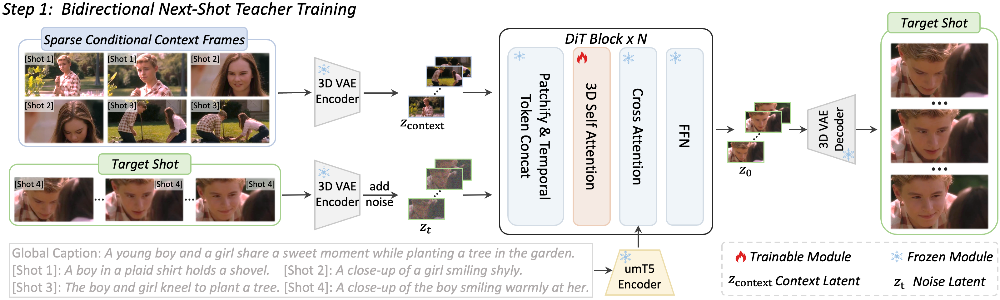

TL;DR: ShotStream is a novel causal multi-shot architecture that enables interactive storytelling and efficient on-the-fly frame generation, achieving 16 FPS on a single NVIDIA GPU.
Each case presented here illustrates a generated sequence comprising 5-6 consecutive shots and nearly 500 total frames, demonstrating the model’s ability to maintain narrative and visual consistency across scene transitions.
Note: More results could be found in section More Results.
[global caption] A dramatic scene unfolds in a sunlit pine forest featuring a tense encounter between a man and a blonde woman, with a crying newborn baby present in a bassinet. The video alternates between emotional close-ups of the characters' faces and wider shots of their standoff amidst the tall, straight trees bathed in golden hour light.
[shot1] A close-up shot focuses on a troubled-looking man with messy dark hair, wearing a dark coat and grey scarf, looking downwards with a somber expression against a brightly lit, blurred forest background.
[shot2] The camera cuts to a close-up of a newborn baby wrapped in a white blanket, crying with its mouth open, resting inside a white woven bassinet in the forest setting.
[shot3] A medium shot reveals the man, seen from behind, standing opposite a blonde woman in a white coat who looks at him with a surprised and concerned expression, set against the dramatic vertical lines of the sunlit pine trees.
[shot4] The camera pulls back for a slightly wider view of the man and woman facing each other in the forest, emphasizing the emotional distance between them in the golden light.
[shot5] A tight close-up on the blonde woman's face captures her worried and fearful expression, her blonde hair strongly backlit by the warm, setting sun.
[shot6] The scene returns to a medium shot of the man and woman facing each other in the woods, maintaining their tense standoff as the golden light continues to stream through the dense trees behind them.
[global caption] A comedic scene unfolds in a bizarre dining setting featuring an indoor grass floor. A small black and white dog excitedly runs towards a plate of salad placed on the ground. The video cuts back and forth between the dog investigating its unexpected meal and the shocked, disgusted reactions of two women sitting nearby in formal pink dresses.
[shot1] A small black and white dog runs from left to right across a faux-grass floor towards a plate of salad resting on the ground. Two formal black dining chairs sit empty in the background against dark red curtains and wooden slats.
[shot2] The camera cuts to a close-up of a Black woman with an elegant updo, wearing a pink strapless dress and a silver heart necklace. She looks off-camera with an expression of profound shock and mild disgust.
[shot3] A close-up profile shot shows the dog panting happily, its attention fixed on the plate of food just out of frame to the right.
[shot4] The scene cuts back to the first woman in the pink dress, her face still frozen in a look of disbelief and concern as she continues to watch the situation unfold.
[shot5] Another close-up profile of the dog, now looking down intently, sniffing at the plate of salad that is partially visible at the bottom of the frame.
[shot6] A close-up reveals a second Black woman, also styled in a pink strapless dress and heart necklace. She is looking off-camera, her mouth open in a wide expression of surprised exasperation.
[global caption] The video features a series of close-up shots of different men in traditional or historical attire, suggesting a serious conversation or meeting.
[shot1] A man with a grey beard and a decorative silver headpiece is speaking.
[shot2] A man wearing a dark helmet and armor listens attentively in profile.
[shot3] A close-up focuses on a hand resting on a patterned surface.
[shot4] An elderly man with long white hair and beard looks downwards in contemplation.
[shot5] The man in armor is now seen speaking, looking slightly off-camera.
[shot6] The first man with the grey beard looks downwards, appearing serious.
[global caption] In a vibrant animated scene, a cheerful star-shaped character interacts with a round, pink-skinned child. The star floats around the child and a group of officials in a theater-like setting, eventually getting held by the child before dancing away into the spotlight.
[shot1] A yellow, star-shaped character with a green leaf hat floats in front of a mirror with lit bulbs, greeting the viewer with a smile.
[shot2] The scene shifts to a wider view of a theater room where the star floats near a round, pink-skinned child and two men in military-style uniforms sitting at a desk.
[shot3] A close-up of the child's face shows an expression of surprise and slight concern as they look around at the floating star.
[shot4] The star character continues to fly around the room, circling near the child's head while the child watches it intently.
[shot5] The child reaches out and gently holds the star in arms, smiling at it while an official at the desk watches.
[shot6] The star character flies away from the child toward the center of the stage, spinning and dancing in a bright spotlight.
[global caption] A blonde woman in a black jacket and a bald Black man in a purple shirt are having a conversation across a red and gold desk in an opulent room with gold furniture and large windows. The scene cuts between close-ups of their faces as they talk and a wide shot establishing their positions at the desk.
[shot1] A close-up of a blonde woman with bright red lipstick and gold stud earrings, looking attentively off-camera with a neutral expression in an ornate room setting.
[shot2] A close-up of a bald Black man with a grey goatee, wearing a purple button-down shirt and patterned tie, speaking with a slight smile.
[shot3] A wide shot showing the woman and man seated facing each other at an ornate, gold-trimmed red desk. The woman has an open laptop and documents in front of her, while the man sits opposite her. Behind them is a gold, tufted sofa and two large windows with lit lamps on either side.
[shot4] A close-up returns to the man, who is looking towards the woman (off-camera) with a soft, slightly amused expression.
[shot5] A close-up of the woman, her brow slightly furrowed and mouth slightly open, appearing concerned or surprised by the ongoing conversation.
[shot6] A close-up of the man speaking again, his expression more serious as he continues the discussion.
[global caption] An elderly couple stands in a brightly lit living room, engaged in a serious conversation while a young boy listens intently. The scene alternates between wide shots of the three figures and close-ups of the man and woman as they speak to one another.
[shot1] A wide shot shows an elderly man in a suit and an older woman in a floral cardigan standing side-by-side in a living room, looking toward a young boy who stands facing them.
[shot2] A close-up of the elderly man, wearing glasses and a dark suit, as he speaks with a concerned expression.
[shot3] A close-up of the woman, with her silver hair neatly styled, looking at the man with a serious and attentive look.
[shot4] The camera cuts back to the elderly couple standing together, looking at each other while they talk.
[shot5] A medium wide shot shows the couple and the boy, capturing the spatial arrangement of the room and the focus of the three individuals.
[shot6] A close-up shot focuses again on the man and woman as they continue their discussion, highlighting the tension and gravity in their exchange.
[global caption] The video depicts a tense scene in a sandy, desolate environment where a bearded man armed with a sniper rifle is engaged in a standoff. He is seen aiming his weapon, reacting to his surroundings, and pursuing a mysterious masked figure.
[shot1] A close-up shot shows a bearded man intently looking through the scope of a large rifle, with a distorted "STOP" sign and sandy background visible.
[shot2] The camera pulls back to show the man standing up, holding his rifle and looking to the side, while two bodies lie on the ground behind him amidst sandbags.
[shot3] The view shifts to over the armed man's shoulder, showing him aiming his rifle towards a person dressed in black with a white face mask walking away towards a building.
[shot4] The armed man runs forward, following the masked figure as they walk away between large stacks of sandbags.
[shot5] The video ends with another close-up of the bearded man aiming his rifle through the scope, his expression focused and serious.
[global caption] The video features an adult red fox and a smaller, lighter-colored fox in a vibrant green field with small yellow flowers. The footage captures them together, as well as in individual close-ups, before showing them moving around their natural habitat.
[shot1] An adult red fox and a smaller fox stand together in a grassy field.
[shot2] A close-up shot shows the smaller fox sitting near a small dirt patch or hole in the grass.
[shot3] A profile close-up focuses on the head and thick fur of the adult red fox.
[shot4] The smaller fox is seen from a distance trotting across the grassy field.
[shot5] Both foxes are captured moving around the grassy field; the adult fox walks past a dirt mound towards the left edge of the frame, while the smaller one moves towards the right in the background.
[global caption] A middle-aged man in a suit and a young woman in a hoodie review a mysterious document together. The scene features close-ups of the document's unique circular seal and the focused expressions of the two individuals as they exchange the folder, suggesting a serious or investigative context.
[shot1] A medium shot of a man in a formal dark suit and striped tie, looking down at an open folder with a concentrated expression.
[shot2] A close-up of two pairs of hands holding a leather folder open, revealing a page with a distinct gray circular seal or insignia in the center.
[shot3] An over-the-shoulder shot showing a young woman with short dark hair, wearing a gray and blue hoodie, looking intently at the documents being held by the man.
[shot4] A medium shot of the man looking up and speaking to the woman, his expression professional and serious.
[shot5] A close-up of the young woman as she focuses on the contents of the folder, holding it with both hands.
[global caption] An animated sequence features a man and a woman in a lush forest setting interacting with a white bird. The scene follows them as they hold the bird before releasing it to fly freely into the sunlit woods.
[shot1] A close-up shot introduces a woman wearing a red hat and jacket, holding a white bird, while a man in a black suit stands beside her, looking at her.
[shot2] The camera focuses tightly on the woman's face, showing her with an engaged expression, with the white bird visible just next to her.
[shot3] The view pulls back slightly to show the man now holding the white bird, which starts to flap its wings in his hands.
[shot4] The man releases the bird, and both characters are seen from the side watching as the bird takes flight.
[shot5] The video concludes with a wide landscape shot of the vibrant forest, following the white bird as it flies away over a field of colorful flowers towards the bright sun.
[global caption] The video provides a series of cinematic views of a gorilla troop in a lush, misty forest, highlighting their powerful physical features and peaceful social interactions.
[shot1] A close-up shot focuses on a gorilla's dark, furry hand resting on a vibrant moss-covered rock in a dense green forest.
[shot2] A medium shot captures a gorilla sitting calmly with another standing right behind it in a misty, verdant landscape.
[shot3] A wider view shows a group of gorillas gathered near a foggy riverbank, including one gorilla in the background holding a piece of green fruit.
[shot4] A gorilla is seen resting on a large moss-covered boulder while another smaller gorilla moves across the foreground in the misty woods.
[shot5] The final shot is a striking, detailed portrait of a gorilla with a reddish-brown crest looking directly at the camera with a steady, calm gaze.
[global caption] A man in traditional Chinese attire is seen riding a horse through a rocky, mountainous landscape at night, interspersed with close-up shots highlighting his serious and contemplative facial expressions.
[shot1] A man in dark clothing rides a brown horse up a grassy, rocky hillside under a dark night sky.
[shot2] A wide cinematic shot shows the man and horse standing still in a vast, dark valley surrounded by forested mountains.
[shot3] A close-up focuses on the young man's face; he has long black hair and is wearing a dark robe with a brown fur-trimmed vest, looking directly at the camera with a serious expression.
[shot4] Another wide shot from a different angle shows the man on his horse, stationary in the dark, hilly terrain.
[shot5] A final close-up of the man shows him looking off to the side, his expression remains pensive and serious against the dark background.
[global caption] A scene showing an older man examining a silver watch before engaging in a conversation with a younger blonde man. The sequence alternates between close-ups of the watch and the faces of the two men as they speak to each other in a dimly lit indoor setting.
[shot1] A close-up focuses on a pair of older hands holding a silver wrist watch with a black face, turning it slightly to view the dial.
[shot2] A close-up of an older man with a mustache and round glasses, wearing a dark coat over a blue shirt and tie, as he speaks with a serious expression.
[shot3] The camera cuts to a close-up of a younger man with short blonde hair, wearing a brown jacket over a white t-shirt, listening with a slight, subtle smile.
[shot4] The shot returns to the older man, still speaking and looking slightly downwards, maintaining a solemn demeanor.
[shot5] Another close-up of the younger man, who is now speaking, looking directly off-camera with an engaged expression.
[shot6] The final shot is a close-up of the older man again, listening quietly and looking down, concluding the sequence.
[global caption] A man wearing a headset is working at a computer console in a high-tech control room, accompanied by a blue and silver robot with glowing red eyes. The scene alternates between close-ups of the robot, the man's focused face, and his hands typing on a keyboard, suggesting a serious operation or interaction between the human and the machine.
[shot1] A close-up of a blue and silver robot with bright red eyes standing in a high-tech room. A man's arm, wearing a watch, is visible in the foreground.
[shot2] The camera provides a slightly wider view of the robot's upper body, revealing more of its blue chest armor with yellow details as it stands motionless.
[shot3] A close-up profile shot focuses on a young man wearing a black headset, looking intently at a screen with a serious expression.
[shot4] An over-the-shoulder shot shows the back of the man's head as he looks towards a computer monitor, with the robot standing in the background.
[shot5] A medium shot captures the man in profile as he focuses on his work, with the robot positioned behind him in the background.
[shot6] A close-up shot focuses on the man's hands as he types steadily on a white computer keyboard, with bright monitors visible in the background.
[global caption] The video features adorable orange hamsters exploring a bright, sunny garden filled with green grass, purple flowers, and rustic props like a basket of corn and a metal bucket.
[shot1] Two small orange hamsters are seen foraging in thick green grass near vibrant purple flowers, a basket of corn, and a small silver bucket.
[shot2] The pair of hamsters scurry across the lawn, passing by the woven basket and the metal bucket in the warm sunlight.
[shot3] The hamsters transition from the grass to a small patch of soil, continuing their exploration near the props.
[shot4] A single hamster is shown exploring the base of the corn-filled basket on the green grass.
[shot5] A detailed close-up shot focuses on one hamster sitting in the grass, looking curiously toward the camera with its bright eyes.
[global caption] This animated sequence depicts a tense standoff between a green-haired girl and a fearsome horned beast in a vast, snow-covered mountain landscape.
[shot1] A close-up shot introduces a young girl with vibrant green hair looking up at a large, black-furred monster that wears a decorated helmet with sharp white horns.
[shot2] The monster is seen from a distance, standing in a barren, snowy plain with a backdrop of towering, snow-capped mountains.
[shot3] A tight close-up focuses on the monster's face, highlighting its fierce red eyes, sharp fangs, and the golden detailing on its black helmet.
[shot4] The camera angle shifts to a low view, showing a pair of legs in bright green stockings and matching high-heeled shoes standing on the dry, snowy ground.
[shot5] The video ends with a close-up of the green-haired girl, capturing her pensive and slightly troubled expression as she looks off-camera.
Comparison
Compared to open-source baselines of similar scale, our method shows higher fidelity to multi-shot prompts, achieving exceptional visual consistency and smooth transitions.
Mask2DiT
EchoShot
CineTrans
Self Forcing
LongLive
Rolling Forcing
Infinity-Rope
Ours
[global caption] Two elegantly dressed women and three uniformed security personnel are gathered in an office, engaged in a conversation that transitions from tense exchanges to moments of shared understanding.
[shot1] A close-up shot focuses on a blonde woman wearing red-rimmed glasses and a thick gold chain necklace as she speaks with a serious, determined expression.
[shot2] The camera cuts to a close-up of a woman with long, dark hair and a similar gold necklace, who is smiling confidently while listening.
[shot3] Returning to the blonde woman in red glasses, she is seen speaking again, her facial expression suggesting she is explaining or arguing a point.
[shot4] A wide shot reveals the entire group in an office setting with filing cabinets; the two women stand at a desk while three men in light blue uniforms stand behind them.
[shot5] The video concludes with another close-up of the blonde woman, who looks upward with a thoughtful and slightly more relaxed expression.
Ablation Study
We perform ablation studies to validate the key design choices and training strategies of the causal student models. 1) Dual-Cache Distinction Strategy: To justify the need to separate global from local caches, we compare our proposed RoPE offset (Ours) against a baseline with no distinction (w/o Indicator) and a variant using a learnable embedding applied to the target video's first chunk (Learnable Emb.). The results demonstrate that explicit distinction is essential (Learnable Emb. vs. Ours), and our training-free RoPE offset outperforms the learnable embedding approach (Learnable Emb. vs. Ours). 2) Causal Distillation Training: We evaluate our two-stage distillation strategy against single-stage baselines (Only Stage 1 and Only Stage 2). Both stages prove indispensable: stage 1 establishes foundational next-shot generation capabilities, while stage 2 faithfully simulates inference to bridge the train-test gap.
w/o Indicator
Learnable Emb.
Ours
[global caption] The video depicts a tense and apocalyptic scene where a massive, winged creature confronts a woman sitting inside a van amidst a ruined, dusty cityscape during sunset.
[shot1] A close-up shot shows a dark, scaly creature with wings shrieking or roaring next to a green van, with the ruins of a city visible in the background.
[shot2] The camera pulls back to a wide shot, showing the creature standing in a desolate, debris-filled landscape behind the van as dust swirls around.
[shot3] From the perspective of the van's interior, the creature's silhouette with its large, sharp wings is seen through the windshield, looming over the road.
[shot4] A side profile of a woman with short dark hair shows her looking out of the van's window with a focused and wary expression.
[shot5] A low-angle shot captures the creature spreading its enormous, feathered wings wide against a vibrant pink and orange sky, towering over the destroyed buildings.
[shot6] The video ends with a close-up of the woman's face, her eyes wide with shock and concern as she gazes at the creature.
Only Stage 1
Only Stage 2
More Results
[global caption] The video features two young animated birds, one brown and one grey, interacting and talking in a colorful field of flowers under a clear blue sky.
[shot1] A close-up shot shows a young brown bird and a grey-and-white bird standing among tall green grass and vibrant purple flowers, looking at one another.
[shot2] The camera pulls back slightly to show the two birds in profile against a field of flowers and a bright blue sky, with a flock of smaller birds flying in the distance.
[shot3] A medium shot captures the two birds standing on a brown path next to the flower field, continuing their animated conversation.
[shot4] The focus shifts to a tight close-up of the grey-and-white bird's face as its eyes widen and beak opens in surprise, while the brown bird stands just behind it.
[shot5] The final shot shows both birds standing together with their wings slightly outspread, looking at each other as if sharing a moment of realization or excitement.
[global caption] The video depicts a tense and emotional battlefield scene, focusing on a soldier's stunned reaction to a fallen comrade amidst smoke and a desolate, sandy landscape.
[shot1] A close-up shot shows a soldier in a green uniform and cap, holding a rifle with a shocked and intense expression as smoke drifts in the background.
[shot2] A wide shot captures a soldier lying on the sandy ground in a smoke-filled battlefield, while another soldier walks toward him.
[shot3] The camera returns to a close-up of the first soldier, whose face is frozen in a wide-eyed, stunned expression.
[shot4] The soldier is seen crouching beside the fallen man on the ground, with thick smoke rising in the desolate environment.
[shot5] Another close-up focuses on the soldier's face, now showing a look of extreme distress or urgency as he shouts.
[shot6] The final shot shows the soldier from behind, standing and looking down at the body on the ground as white smoke billows around them.
[global caption] A police officer in uniform and a man wearing a trench coat and fedora, holding a UFO magazine, have a tense conversation inside a dimly lit, cluttered storage room. The scene captures a mysterious atmosphere as the two men exchange information while surrounded by items covered in plastic sheets.
[shot1] A medium shot shows the police officer and the man in the trench coat standing in a dark room with windows, discussing as the officer gestures with his hand.
[shot2] A quick pan across the room reveals storage shelves covered in plastic, highlighting the cluttered and secretive environment.
[shot3] A medium shot features the officer talking and pointing as the man in the trench coat listens, holding his magazine.
[shot4] The camera focuses on the man in the fedora, who stands still in the dim light, looking towards the officer with a serious, slightly guarded expression.
[shot5] The officer continues to speak, pointing his finger toward something off-camera, maintaining an authoritative tone.
[shot6] A close-up of the man in the trench coat as he listens, his face illuminated just enough to show his focused reaction to the officer's words.
[global caption] This animated sequence showcases beautifully rendered farm animals in a softly lit barn environment, focusing on their gentle interactions and adorable appearances.
[shot1] A fluffy, light-colored piglet stands next to a brown horse with a white stripe on its face inside a wooden barn.
[shot2] A close-up portrait shows a white lamb looking directly forward, softly backlit to create a glowing effect around its ears and fleece.
[shot3] A fuzzy, tan-colored animal stands facing a small pink piglet that is sitting in a pile of hay, with the legs of another large animal visible in the background.
[shot4] The camera focuses closer on the interaction, showing the back of the furry, tan animal looking down at the small pink piglet in the hay.
[shot5] A tight close-up captures the small pink piglet sitting alone in the hay, gazing upwards with a sweet expression against a dark background.
[global caption] The video captures several exotic birds with prominent red crests and white faces in a sun-lit, arid landscape. It showcases close-up views of their unique features and group shots as they move through the dusty terrain during the golden hour.
[shot1] A close-up shot focuses on the head of a bird with a bright red crest and white facial markings, set against a blurred, golden-hued background.
[shot2] A group of these birds are seen on sandy ground, with one bird in the foreground kicking up dust as it moves.
[shot3] The birds are shown walking away through dry, thin branches, with the sunlight creating long shadows on the ground.
[shot4] Another close-up profile captures the bird looking intently towards the left, emphasizing its sharp beak and detailed feather patterns.
[shot5] The sequence ends with a wider shot of several birds standing together in the brush, illuminated by the warm light of the setting sun.
[global caption] A high-stakes poker game is underway, featuring intense close-ups of an older, serious-looking man and the dramatic movements of his hands as he maneuvers cards and stacks of chips on a green felt table. The atmosphere is heavy with tension and focus, emphasized by the dramatic lighting on the player’s face.
[shot1] A close-up of an older man with gray hair, looking off-camera with a solemn, intense expression.
[shot2] The camera cuts to the man's hands as he skillfully shuffles and deals playing cards onto a green felt surface next to stacks of colorful casino chips.
[shot3] A dramatic close-up of another man's face, also appearing older with lighter hair, illuminated in the dark, maintaining a steady and piercing gaze.
[shot4] The scene returns to the first man, whose expression remains focused and serious as he contemplates his next move.
[shot5] A close-up focuses on the man's hands as he fans out a hand of cards and then places them down on a stack of chips.
[shot6] The final shot is a tight close-up of the second man's face, his eyes fixed intensely on his opponent, heightening the dramatic tension of the game.
[global caption] In a sun-dappled forest, a tense and somber encounter occurs between a man in a black polo shirt and another in a grey long-sleeved shirt, as they stand over a third man lying motionless and bloodied on the ground.
[shot1] A gruesome close-up shows a man lying on the forest floor with his eyes closed and streaks of blood running down his face.
[shot2] A man wearing a black polo shirt sits on the ground, looking up with a look of concern and inquiry toward someone standing over him.
[shot3] A man in a grey long-sleeved shirt stands quietly in the forest, looking down thoughtfully with a somber expression.
[shot4] The camera focuses on the man in the black polo shirt as he speaks, his face conveying worry and distress.
[shot5] A wide shot reveals the two men standing opposite each other in a clearing, with the unconscious man lying on the ground between them.
[global caption] The animated sequence features two skunk characters and a young girl, all wearing orange backpacks, interacting in a vibrant forest setting next to a large tree stump.
[shot1] Two cartoon skunks with orange backpacks stand close together, looking at each other; one skunk has a pink flower on its head.
[shot2] The skunk characters are shown in a medium shot, standing in a forest clearing in front of a large, freshly-cut tree stump.
[shot3] A close-up shot focuses on a young girl with brown pigtails and an orange backpack, her expression appearing slightly worried or pensive.
[shot4] The young girl and one of the skunks are seen standing together in front of the large tree stump, engaging in a conversation.
[shot5] A final close-up shows the skunk with the pink flower looking directly at the young girl as they continue their interaction.
[global caption] In a high-quality 3D animated sequence, a human-looking man with curly hair and a dark-skinned cyborg with glowing blue eyes engage in an intense, serious conversation. They are framed by a backdrop of mysterious, metallic-looking soldiers, suggesting a sci-fi military or political confrontation.
[shot1] A medium close-up of a man with brown curly hair, wearing a reddish-brown jacket with silver armor plating, looking seriously at his companion.
[shot2] A close-up of a bald, dark-skinned cyborg with glowing blue eyes and metallic forehead implants, standing still with an imposing presence.
[shot3] A side-profile view of the cyborg, showing the detailed silver headgear and mechanical armor, as he listens to the other man.
[shot4] A medium shot of the man in the reddish-brown jacket, who maintains a steady, determined expression while talking to the cyborg.
[shot5] A profile view of the cyborg looking towards the man, highlighting his intense, glowing blue eyes and stoic facial features.
[shot6] A final close-up of the man in the reddish-brown jacket, who continues to look intently at his companion, completing the tense exchange.
[global caption] A man in a suit and a young woman are engaged in a serious and tense conversation in a professional setting. The scene cuts back and forth between them to highlight their intense facial expressions and the weight of their discussion.
[shot1] A close-up over-the-shoulder shot focuses on a young woman with long dark hair as she speaks with a concerned and serious expression.
[shot2] The camera switches to an over-the-shoulder shot of a middle-aged man in a dark suit and blue shirt as he speaks intently to the woman.
[shot3] Returning to the woman, she is shown listening carefully before responding, her face reflecting worry and pensiveness.
[shot4] A close-up of the man shows him continuing the conversation with a grave and authoritative tone.
[shot5] The focus returns to the woman, who appears troubled and deep in thought as she listens to the man.
[shot6] The final shot captures the man as he finishes speaking, maintaining a focused and serious demeanor.
[global caption] The video features an animated scene of an elf-like character intently focused on a notepad, writing or crossing things out, before looking up with an expression of sudden realization or concern.
[shot1] A close-up shot introduces a pale, elf-like animated character with pointy ears and dark, messy hair, wearing a red plaid shirt, looking down at a notepad with a blue and white pen in hand.
[shot2] The camera zooms in on the character's hands as they use the pen to cross out a line of illegible, cursive-like text on the yellow notepad.
[shot3] The view returns to the character's face, showing him continuing to stare down at the notepad with a serious, concentrated expression.
[shot4] Another close-up on the notepad shows the character's hand writing or crossing out more of the text.
[shot5] The scene concludes with the character looking up from the notepad, his eyes widening in apparent surprise or realization.
[global caption] A tense conversation takes place in a dimly lit room, possibly a boardroom or an office, between a man in a purple suit and an older woman in a purple jacket. The interaction transitions from a serious exchange to the woman smiling warmly, followed by the man leaning over the table towards her.
[shot1] A medium shot shows a man wearing a vibrant purple suit and matching tie, looking slightly off-camera with a confused or concerned expression. Behind him, a red "EXIT" sign is clearly visible against a dark background.
[shot2] The camera angle shifts to an over-the-shoulder view from behind a person in a purple suit, focusing on an older woman with short grey hair sitting across a dark, polished table. She wears a dark purple jacket, and glasses of water and some papers rest on the table between them.
[shot3] A close-up shot focuses on the face of the man in the purple suit, who has a dark goatee and is looking intently towards the right, appearing to listen closely. The blurred back of a grey-haired person's head is visible in the lower right foreground.
[shot4] The view cuts back to the older woman, who is now smiling brightly and looking towards the left, with the red "EXIT" sign glowing in the background behind her.
[shot5] A wider shot captures the room's setting, showing the man in the purple suit standing up from his chair and leaning over the table towards the seated older woman, who continues to look at him calmly.
[global caption] A serious conversation unfolds in a hospital room between a doctor and a concerned woman. The scene cuts back and forth between them, and briefly shows a male patient resting in a hospital bed nearby.
[shot1] A close-up over the shoulder of a doctor focuses on a woman wearing a purple shirt, who is speaking with a concerned expression, an IV drip clearly visible beside her.
[shot2] The angle changes to an over-the-shoulder shot of the woman, now focusing on the male doctor in a white lab coat over a red shirt as he talks to her.
[shot3] The view returns to the woman in the purple shirt, capturing her looking somber and listening intently to the doctor.
[shot4] A wider shot shows a male patient lying still in a hospital bed with his eyes closed, while the doctor stands at his bedside, speaking.
[shot5] The camera cuts back to the over-the-shoulder shot of the woman in the purple shirt, showing her looking worried as she speaks to the doctor again.
[global caption] A black and white lemur is observed in a forest setting characterized by tall, thin, light-colored trees. The video provides close-up views of the animal's face and follows its movements as it interacts with a tree and walks across the forest floor.
[shot1] A close-up profile shot shows the head of a black and white lemur with striking yellow eyes looking off to the right, against a softly blurred background of thin stalks.
[shot2] The lemur is seen from the side, clinging to a rough tree trunk with its white-furred arms, seemingly peering around the edge of the tree.
[shot3] A wider shot reveals the lemur standing on a ground covered in brown leaves within a dense forest of slender, vertical trees; it briefly turns to look directly at the camera.
[shot4] The lemur walks horizontally across the frame from left to right on the leaf-strewn ground, its long tail trailing behind it.
[shot5] Filmed from behind, the lemur walks away from the camera deeper into the forest, eventually disappearing behind a larger tree trunk on the right side of the frame.
[global caption] The video features a close-up dialogue between a woman with short blonde hair and a man with a shaved head. They are standing outdoors with a background of green bamboo stalks. The camera alternates between over-the-shoulder shots of each character as they converse.
[shot1] An over-the-shoulder shot focuses on the blonde woman wearing a white t-shirt with a green badge, looking at the man and speaking.
[shot2] The camera angle switches to focus on the man in a grey hoodie, seen over the woman's shoulder, as he speaks and gestures slightly.
[shot3] The view returns to the woman, who now has a gentle smile as she listens or responds to the man.
[shot4] The focus shifts back to the man, who continues talking with an earnest expression.
[shot5] The scene cuts back to the woman one last time, her expression appearing slightly more attentive and serious as she looks at the man.
[global caption] This animated sequence features a young woman and an older man in a dark, atmospheric forest setting. The scene focuses on the woman's expressions as she listens to the man, who appears to be a traveling companion or guide, while they stand near a stream amidst dense, gnarled trees.
[shot1] A close-up shot shows a young woman with long brown hair, bright blue eyes, and pinkish makeup, looking forward with a slight, subtle smile.
[shot2] The camera shifts to an over-the-shoulder view from behind the woman, revealing a dark, misty forest with twisted tree trunks and a small stream flowing through the center.
[shot3] Returning to a close-up, the woman's expression becomes more serious and contemplative as she gazes downward.
[shot4] A medium shot introduces a man with a goatee, wearing a green robe and carrying a purple backpack, who is smiling and speaking to the woman.
[shot5] The final shot shows the man standing a short distance away by the forest stream, looking back and continuing to talk to the woman, whose back is visible in the foreground.
[global caption] This peaceful sequence follows an adult bear and its cub as they navigate a sun-dappled forest. The video highlights the cub's inquisitive nature as it peeks through branches and attempts to climb trees, ending with a heartwarming moment of affection between the parent and child.
[shot1] An adult bear and its cub are seen standing together in a forest clearing filled with tall trees and large, smooth grey rocks.
[shot2] A close-up shows the bear cub peering curiously through the soft green needles of a pine branch.
[shot3] The cub stands up on its hind legs, leaning against a tall tree trunk as it explores the texture of the bark.
[shot4] The adult bear walks gracefully through the rocky forest floor, illuminated by the bright, warm sunlight filtering through the trees.
[shot5] The cub and the adult bear meet at the base of a tree, where the cub gently nuzzles the adult's face in a tender interaction.
[global caption] Two women with red hair, one older and one younger, are engaged in a serious and emotional conversation in a busy hospital hallway. The scene alternates between close-up shots of each woman as they exchange words in a professional yet tense atmosphere.
[shot1] A close-up of a mature woman with long, wavy red hair and a gold cross necklace, speaking with a concerned expression while hospital staff move in the background.
[shot2] The camera cuts to a close-up of a younger woman with her red hair pulled back in a ponytail, wearing a white collared shirt and dark blazer, speaking earnestly.
[shot3] The view returns to the older woman, who is listening intently with a grave and attentive facial expression as the discussion continues.
[shot4] A close-up of the younger woman again, continuing her explanation with a focused and determined look.
[shot5] The older woman responds, looking directly at the younger woman, her expression remaining serious amid the active corridor setting.
[global caption] A group of warriors in historical or fantasy-style armor are gathered in a vast, snowy mountain landscape, appearing prepared for an impending battle or assembly under the leadership of a stern, bearded man.
[shot1] A close-up features a man with long reddish-brown hair and a full beard, wearing fur-trimmed armor and looking seriously toward someone off-camera.
[shot2] A wide shot reveals a large army of warriors in dark armor and hoods, standing in formation within a desolate, snowy valley between high peaks.
[shot3] The leader is seen in a medium shot, holding a large battle axe over his shoulder as he looks upward with a determined expression.
[shot4] A medium shot depicts several fierce-looking warriors standing together, all with similar long hair and beards, clad in heavy armor.
[shot5] The scene concludes with another close-up of the leader, who appears to be speaking or shouting commands with a resolute look on his face.
[global caption] A man and a woman are seen in a warm, flirtatious exchange in what appears to be a library or study. The camera alternates between close-up shots of each person, capturing their happy expressions and genuine smiles as they converse.
[shot1] A close-up shot features a woman with dark hair pulled back in a ponytail, smiling and speaking softly while looking at a man whose shoulder is partially visible in the foreground.
[shot2] The camera angle shifts to a close-up of a man with wavy blonde hair and a beard, who is looking at the woman with a broad, affectionate smile.
[shot3] Returning to the woman, the camera captures her smiling even more brightly as she continues the conversation, with a bookshelf filled with volumes in the background.
[shot4] A close-up of the man shows him laughing or smiling widely, clearly entertained and engaged by what the woman is saying.
[shot5] The video concludes with another shot of the woman, who maintains her cheerful and animated expression as she continues to talk to the man.
[global caption] A young girl and an older woman are engaged in a serious and emotionally heavy conversation in a dimly lit indoor setting. The camera alternates between close-up shots of each person, capturing their expressions of concern, sadness, and empathy as they speak to one another.
[shot1] A close-up shot features a young girl with brown hair looking saddened or worried, her gaze fixed on someone off-camera.
[shot2] The camera angle shifts to an older woman with dark, curly hair wearing a blue shirt, who is speaking earnestly and with a concerned expression.
[shot3] Returning to the young girl, she is shown with a pensive and somber expression, listening intently to the woman.
[shot4] A close-up of the older woman captures her speaking once more, her face filled with empathy and focus as she continues the conversation.
[shot5] The final shot focuses on the young girl's face as she looks slightly downward, appearing reflective and thoughtful about what has been said.
[global caption] A large brown bear is captured exploring a rocky beach, interacting with seagulls and entering the breaking waves of the ocean.
[shot1] A large brown bear stands on a rocky shore, looking out towards the ocean where several white seagulls are perched or flying nearby.
[shot2] The bear is seen from the front, standing alert on the dark pebbles as white waves crash behind it.
[shot3] The bear begins to walk into the shallow water, with seagulls flying around in the foreground and background.
[shot4] A profile view shows the bear walking steadily along the water's edge, its wet fur glistening as waves break in the background.
[shot5] The bear turns and walks deeper into the surf, splashing as it moves through the foamy blue water.
[global caption] The video depicts a group of men in an outdoor, rocky setting, seemingly part of an expedition or search party. The shots alternate between tense close-ups of different individuals and a medium shot of the entire group gathered in a narrow rocky corridor, highlighting a mood of serious focus and determination.
[shot1] A close-up shot focuses on a man wearing a patterned headband and a beaded necklace, looking intensely at something ahead with wide eyes and a serious expression.
[shot2] A close-up shows a young man with dark hair in a light-colored denim-style jacket looking off to the side with a concerned and pensive expression.
[shot3] The camera returns to a close-up of the man with the headband, who looks focused and slightly to his left as he observes his surroundings.
[shot4] A medium shot captures a group of men and at least one woman standing in a narrow rocky passageway; the man with the headband appears to be leading the group and giving instructions.
[shot5] The final shot is a close-up of another man with a goatee looking downwards, appearing somber and contemplative amidst the rugged environment.
[global caption] This animated sequence captures a young man with a facial wound standing on a balcony at sunset, reflecting on his surroundings with a somber and pensive demeanor.
[shot1] A close-up profile shows the young man looking down, a bloodstain visible on his cheek as the sun sets behind distant mountains.
[shot2] A wide shot from behind depicts the man standing on a stone balcony with a wooden railing, gazing out at a serene mountain range under a golden sky.
[shot3] A close-up focuses on the man's hands resting still at his sides as he stands on the textured floor of the balcony.
[shot4] A medium profile shot shows the man looking out towards the misty hills, with the warm evening light reflecting off his brown jacket.
[shot5] The final shot is another close-up of his face as he looks down with a sorrowful expression, deep in thought amidst the quiet beauty of the landscape.
Abstract
Multi-shot video generation is crucial for long narrative storytelling, yet current bidirectional
architectures suffer from limited interactivity and high latency. We propose ShotStream, a
novel causal multi-shot architecture that enables interactive storytelling and efficient on-the-fly
frame generation. By reformulating the task as next-shot generation conditioned on historical context,
ShotStream allows users to dynamically instruct ongoing narratives via streaming prompts. We achieve
this by first fine-tuning a text-to-video model into a bidirectional next-shot generator, which is then
distilled into a causal student via Distribution Matching Distillation. To overcome the challenges of
inter-shot consistency and error accumulation inherent in autoregressive generation, we introduce two
key innovations. First, a dual-cache memory mechanism preserves visual coherence: a global
context cache retains conditional frames for inter-shot consistency, while a local context
cache holds generated frames within the current shot for intra-shot consistency. And a RoPE
discontinuity indicator is employed to explicitly distinguish the two caches to eliminate ambiguity.
Second, to mitigate error accumulation, we propose a two-stage distillation strategy. This
begins with intra-shot self-forcing conditioned on ground-truth historical shots and progressively
extends to inter-shot self-forcing using self-generated histories, effectively bridging the train-test
gap. Extensive experiments demonstrate that ShotStream generates coherent multi-shot videos with
sub-second latency, achieving 16 FPS on a single GPU. It matches or exceeds the quality of slower
bidirectional models, paving the way for real-time interactive storytelling. Code and models will be
released.
Method
We first fine-tune a text-to-video model into a bidirectional next-shot model.

Figure 1. Overview of the Bidirectional Teacher Model.
The next-shot model is subsequently distilled into an efficient, 4-step causal model via Distribution Matching Distillation. We also propose a novel dual-cache memory mechanism and a two-stage distillation strategy to enable efficient, robust, and long-horizon multi-shot generation.